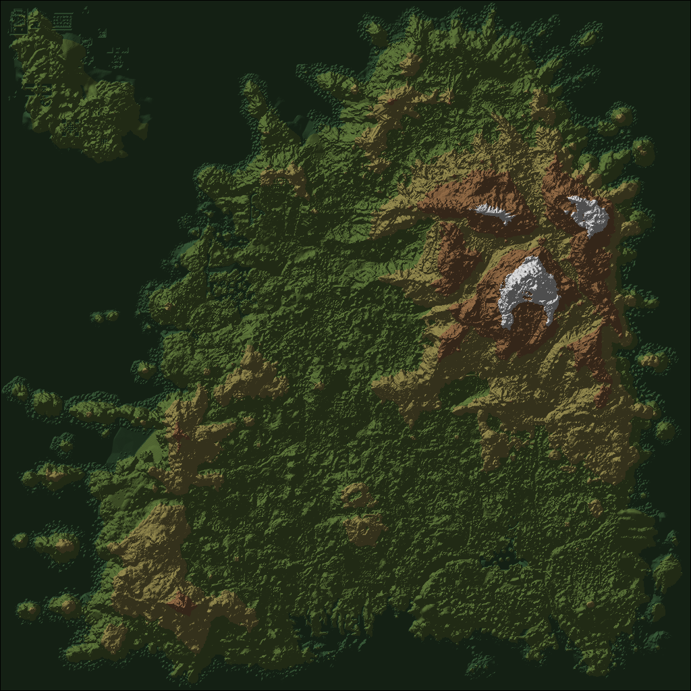

对 enshrouded.gamevault.in/map 的技术勘察 · 全链路已实测打通
能，而且成本很低。该站的 3D 地图不是自研资产，而是把游戏本体的世界数据在浏览器里解码后重建的。它自己就是一次逆向工程的成果，防护只加了一层自制混淆，本次勘察已完全还原并取到真实数据。
| 目标 | 难度 | 实测结果 |
|---|---|---|
| 点位、物品、任务、中文译名等 JSON | 容易 | 335 个数据路径全部还原，已解出真实内容 |
| 2D 底图瓦片 | 容易 | 明文静态 JPEG，无任何加密 |
| 3D 地形主体 | 容易 | 26MB 的 terrain.bin 明文直出，已解码并渲染成图 |
| 3D 渲染器与存档解析 | 中等 | 前端有完整实现，可读可学，但重写才属于自己的代码 |
真正的门槛在渲染与存档解析一侧，不在取数一侧。取数已经被这一层薄薄的混淆挡得很勉强。
站点在 /enc.js 里放了一套自制流密码，所有 JSON 数据都不以文件形式直出，而是走一个统一接口按需下发密文。机制如下。
脚本内嵌四个 32 字节数组，逐字节异或即得主密钥。密钥就在文件里，没有任何外部输入。
// enc.js 开头的原样逻辑
for (var o = 0; o < 32; o++) r[o] = t[o] ^ s[o] ^ n[o] ^ i[o];
// r 即主密钥，t / s / n / i 就是文件里那四串数字
a["wki"] = { k: r, e: "/wiki-data/api/serve_wikidata" };POST /data/api/serve_hubdata.php
Content-Type: application/json
{"k":"668d0ba0a711c44b","t":"t3d_vox_index"}响应体是 前 16 字节 nonce + 密文。解密是标准 CTR 结构，用 SHA-256 当伪随机函数：
// 逐 32 字节生成密钥流并异或
const block = new Uint8Array(52);
block.set(key, 0); // 32B 主密钥
block.set(nonce, 32); // 16B 随机前缀
// 末尾 4B 小端计数器 counter
const ks = await crypto.subtle.digest("SHA-256", block);
plain[i] = cipher[i] ^ ks[j];这不是加密，是路径混淆。算法、密钥、端点、数据清单全部随页面明文下发，浏览器能解开，任何脚本都能解开。它挡住的只是直接 curl 拿文件的顺手行为。
附带发现：站点还劫持了
window.fetch，凡是命中数据表路径的 GET 请求都被本地解密后返回一个合成 Response。因此前端代码里写的是fetch("/data/3d/vox/index.json")，看起来像在读静态文件。
| 分组 | 规模 | 内容 |
|---|---|---|
/wiki-data/ | 约 190 个 | 武器、护甲、材料、配方、生物、任务、传说、珠宝；另有 14 种语言的物品文案与搜索索引 |
/map-data/mapdata/ | 约 30 个 | 点位分组与分类定义、地图元数据、15 种语言的点位译名 |
/data/3d/ | 7 个 | 地形高程、水体、岛屿蒙版、地表贴图、材质调色板、大气参数、洞穴体素索引 |
/chest-finder-data/ | 2 个 | 宝箱与掉落映射 |
/skill-data/ | 约 15 个 | 技能树数据与多语言文本 |
地图数据表里登记的数据文件共 335 个，全部走同一套解密。
以资源点为例，locations-resources.json 含 76 条已带归一化经纬度的记录：
{
"id": "2k8ygmyq",
"category_id": "fnolifyl",
"title": "Peaceful Acres",
"description": "**Loot:**\n- Plant Fibers\n- Corn Cobs\n- Red Mushrooms\n- Salt\n- Wolves",
"latitude": 0.52239503316649,
"longitude": -0.87804217689097
}分类覆盖营地点、采集物、Boss、宝箱、传说、任务、其他等，同样各有一个文件。
translations/zh-cn.json 共 6602 条，形如：
["31793211", {"title": "边疆研究室"}]
["33798001", {"title": "铁匠位置"}]
["34428731", {"title": "灵火神殿"}]3D 视图的前端实现位于 /views/map/js/map3d.js，共 85KB，配一个 Web Worker 与 terrain-kernel.js。它取的文件是：
terrain.bin 26,214,432 B 明文 HTTP 200
terrain-water.bin 3,276,832 B 明文 HTTP 200
islands.bin 11,605,776 B 明文 HTTP 200
terrain.jpg 3,586,926 B 明文 HTTP 200
terrain-palette.json 走混淆接口
terrain-atmosphere.json 走混淆接口
vox/index.json 走混淆接口关键点：体量最大的四个文件全部明文直出。被混淆包住的只是体积最小的那几个 JSON 元数据。
头部 32 字节，取第一个 u32 小端读为 0x31544D45，即魔数 "EMT1"；随后是版本 1、网格边长 2560、平面数 3。正文是三个连续平面：
| 平面 | 类型 | 长度 |
|---|---|---|
| 高程 | u16 小端 | 2560² × 2 = 13,107,200 B |
| 材质索引 | u8 | 2560² = 6,553,600 B |
| 生物群系索引 | u8 | 2560² = 6,553,600 B |
合计 32 + 4 × 2560² = 26,214,432 B，与实际文件大小逐字节吻合。
实测统计：高程跨度 0 到 51910，均值 18569；材质索引非零率 100%，出现频次最高的是 16、13、100、1、9。解码后按分层设色加山体阴影渲染，结果如下。

terrain.bin 直接解码渲染的 Embervale 全图。东北雪山、Shroud 覆盖区、外围岛屿轮廓与游戏内地图一致，确认数据真实可用。同一份数据有三级表示，索引文件 vox/index.json 有 894KB：
| 层级 | 网格 | 体素边长 | 覆盖范围 | 用途 |
|---|---|---|---|---|
| level 3 | 2560 | 4 m | 10240 m | 远景地形 |
| level 4 | 5120 | 2 m | 10240 m | 近景地形 |
| vox 分块 | 256 m 一块 | — | — | 洞穴与地下体素，含 runs / verts / triangles / sha 校验 |
页面里还带一个体素砖块解码器 lib/voxbrick.js，能解析 8×8×8 子块、游程编码的材质与密度双流，并支持 zstd 帧的存档格式。这是直接读游戏世界容器的实现。
本项目的地图查看器文档里挂着三个未决问题，这次勘察正好都能填上。
| 我们的缺口 | 这次拿到的答案 |
|---|---|
| 坐标到米的换算比例未确证 | 两级 LOD 都是 10240 单位见方，体素边长 4 m 与 2 m 对应网格 2560 与 5120，两者自洽；站点把世界坐标按 x / X + 0.5 归一化成经纬度，说明世界坐标以原点为中心、半幅 5120。结合 wiki 的 (0,10240)→(10240,0) 画布范围，可判定 1 游戏单位 = 1 米，Embervale 图幅 10240 × 10240 米 |
| 资源点要靠人工标 | locations-resources.json 已有 76 条带经纬度的资源点，另有 collectibles、lore、quests、bosses、chests 五个同类文件 |
| 点位缺中文名 | translations/zh-cn.json 6602 条译名，可用来交叉校验我们已补的中文，而不是从零人工标 |
额外收获：terrain.bin 可以给 3D 视图做真实海拔与剖面；terrain-palette.json 里的材质配色说明其颜色取自游戏自身平均反照率，可作为我们底图配色的参考。
该站 robots.txt 明确禁止抓取这些路径：/map-data/、/data/、/api/、/map-app/ 全部在 Disallow 列表内。上面所有路径都在其禁止范围内。
terrain-palette.json 里直接写着游戏内部构建串 1234127|^/game38/trunk|2026-10-02T20:02:56，terrain-atmosphere.json 里是 keen::AtmosphereResource 7cb4a335-… 与 keen::Biome 枚举名。这坐实了数据是从游戏本体读出来的。建议的处理方式：
| 选项 | 内容 | 代价 |
|---|---|---|
| A. 只补缺口 | 用推导结论确证坐标比例；参考资源点分类与中文译名完善我们的人工标注 | 低，且不引入第三方数据 |
| B. 做 3D 视图 | 以 terrain.bin 的结构为参照，用我们已有的底图与点位自建 3D 展示 | 中，主要是渲染工作量 |
| C. 仅存档 | 本报告入档，需要时再取用 | 无 |